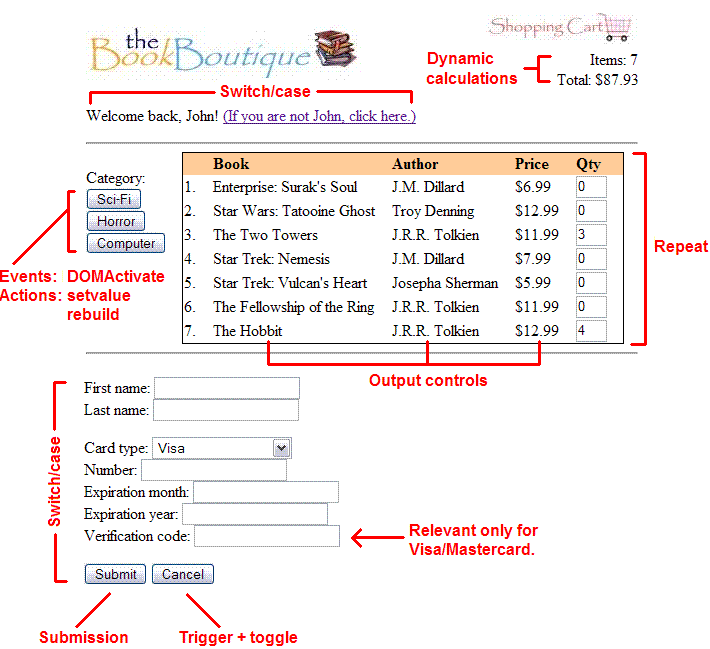

The key item on the page—the list of books—is generated dynamically by using repeat. Each row of the table contains output controls to display the books' name, author, and price, and an input control to change the quantity of books to buy.
The shopping cart at the top of the page uses dynamic calculations to display how many books you have ordered, and the total price.
The category buttons demonstrate both actions and
events. The buttons are set up to change the category whenever
a DOMActivate event is fired, which means whenever the button is
clicked. A rebuild action then causes the list of books to be
redisplayed.
At the top, the "If you are not John, click here" link shows off switch, which is used to dynamically show and hide sections of a web page. In this case, clicking on the link hides the "Welcome back!" message and displays input boxes to change your name. Clicking on the "Update" button then reverts back to the original "Welcome back!" message, but with the new name that you've entered. This works because the input control to enter your first name is tied to the output control embedded in the "Welcome back!" message.
A similar thing happens when you click on the "Are you ready to checkout?" link at the bottom of the page, popping up a form to enter your credit card information. This form shows off the select control, as well as relevance for the verification code field. This field is defined to be relevant only for Visa and Mastercard credit cards, so it is dynamically shown/hidden based on the card type.
Finally, the submit button completes the process. Clicking on this button submits the form. For the bookstore demonstration, it simply displays the instance data that would be submitted, since there is no server-side process to submit to.